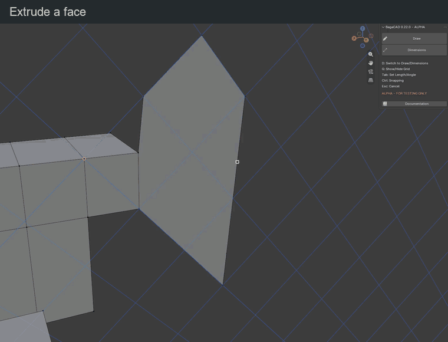
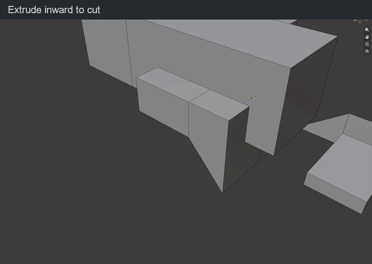

Extrude
Hover inside a face with no segment in progress. A light overlay marks the extrusion target. Start the extrusion, move the mouse, then confirm. The face moves along its normal.
| Key or gesture | Action |
|---|---|
| Click a highlighted face | Start an extrusion preview |
| Move the mouse | Adjust the extrusion distance |
| Type a distance | Set an exact distance in Blender units |
| Minus | Change the direction of the typed distance |
| Backspace | Correct typed distance; without input, cancel the preview |
| Click / Enter during the preview | Confirm the extrusion |
| Esc / right click / Ctrl + Z during the preview | Cancel it and restore the original mesh |
| Ctrl + Z after confirmation | Undo the whole extrusion in one step |
Undo affects the latest validated edit. Cancelling a preview leaves earlier edits in the local history; press Ctrl + Z again to undo the previous edit. An empty history does nothing. After leaving BagaCAD, Blender handles undo.

Several faces
| Key or gesture | Action |
|---|---|
| Shift + click | Add / remove a face from the selection |
| Plain click on a selected face | Extrude the selection |
| Enter with a selection | Extrude along the last selected face's normal |
| Alt + click | Replace the selection with connected coplanar faces and extrude them |
| Esc / right click before extrusion | Clear the selection |
For non-coplanar selected faces, the group moves in one common direction: the normal of the last selected face. Coplanar selection spreads only through shared edges, not corner contacts or detached faces.
Snapping
Height snapping is off by default and is active only while Ctrl is held.
| Key or gesture | Action |
|---|---|
| Hold Ctrl and aim at a vertex, midpoint, edge or face | Place the extruded face plane through that snap point |
| Hold Ctrl during extrusion | Enable height snapping; release for free movement |
| Orbit / pan / zoom | Change the view while keeping the preview active |
The face still moves only along its extrusion direction. A typed distance takes priority over snapping.
Result

Outward extrusion can fuse with volumes in the same mesh. Inward extrusion can make a pocket or a through-hole. The exact boolean calculation happens when you confirm and remains one undo step.
An isolated surface keeps a bottom and becomes a volume. Other objects remain separate.